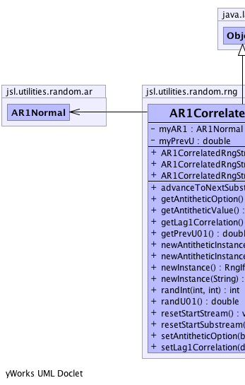
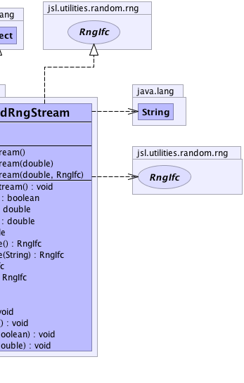

jsl.utilities.random.rng.AR1CorrelatedRngStream
jsl.utilities.random.rng.AR1CorrelatedRngStream
|
||||||||||
| PREV CLASS NEXT CLASS | FRAMES NO FRAMES | |||||||||
| SUMMARY: NESTED | FIELD | CONSTR | METHOD | DETAIL: FIELD | CONSTR | METHOD | |||||||||
java.lang.Object
public class AR1CorrelatedRngStream
Uses the auto-regressive to anything algorithm to generate correlated uniform variates. The user supplies the correlation of the underlying AR(1) process. The resulting correlation in the u's may not necessarily meet this correlation, due to the correlation matching problem.
|  |  |
| Field Summary | |
|---|---|
private AR1Normal |
myAR1
|
private double |
myPrevU
|
| Constructor Summary | |
|---|---|
AR1CorrelatedRngStream()
|
|
AR1CorrelatedRngStream(double correlation)
|
|
AR1CorrelatedRngStream(double correlation,
RngIfc rng)
|
|
| Method Summary | |
|---|---|
void |
advanceToNextSubstream()
Positions the RNG at the beginning of its next substream |
boolean |
getAntitheticOption()
|
double |
getAntitheticValue()
Returns the antithetic of the previous U(0,1) i.e. 1.0 - getPrevU01() |
double |
getLag1Correlation()
|
double |
getPrevU01()
The previous U(0,1) generated (returned) by randU01() |
RngIfc |
newAntitheticInstance()
|
RngIfc |
newAntitheticInstance(java.lang.String name)
|
RngIfc |
newInstance()
Returns a clone of the stream with exactly the same state |
RngIfc |
newInstance(java.lang.String name)
Returns a clone of the stream that has exactly the same state |
int |
randInt(int i,
int j)
Returns a (pseudo)random number from the discrete uniform distribution over the integers {i, i + 1, . . . , j }, using this stream. |
double |
randU01()
Returns a pseudo-random uniformly distributed number |
void |
resetStartStream()
The resetStartStream method will position the RNG at the beginning of its stream. |
void |
resetStartSubstream()
Resets the position of the RNG at the start of the current substream |
void |
setAntitheticOption(boolean flag)
Tells the stream to start producing antithetic variates |
void |
setLag1Correlation(double phi)
|
| Methods inherited from class java.lang.Object |
|---|
clone, equals, finalize, getClass, hashCode, notify, notifyAll, toString, wait, wait, wait |
| Field Detail |
|---|
private AR1Normal myAR1
private double myPrevU
| Constructor Detail |
|---|
public AR1CorrelatedRngStream()
public AR1CorrelatedRngStream(double correlation)
correlation -
public AR1CorrelatedRngStream(double correlation,
RngIfc rng)
correlation - rng - | Method Detail |
|---|
public double randU01()
RandU01Ifc
randU01 in interface RandU01Ifc
public final int randInt(int i,
int j)
randInt in interface RngIfci - start of rangej - end of range
public final void advanceToNextSubstream()
RandomStreamIfc
advanceToNextSubstream in interface RandomStreamIfcpublic final void resetStartStream()
RandomStreamIfc
resetStartStream in interface RandomStreamIfcpublic final void resetStartSubstream()
RandomStreamIfc
resetStartSubstream in interface RandomStreamIfcpublic final void setAntitheticOption(boolean flag)
RandomStreamIfc
setAntitheticOption in interface RandomStreamIfcflag - true means that it produces antithetic variates.public boolean getAntitheticOption()
getAntitheticOption in interface RandomStreamIfcpublic final void setLag1Correlation(double phi)
public final double getLag1Correlation()
public final double getPrevU01()
getPrevU01 in interface RandU01Ifcpublic final double getAntitheticValue()
getAntitheticValue in interface GetAntitheticValueIfcpublic RngIfc newInstance()
GetStreamCloneIfc
newInstance in interface GetStreamCloneIfcpublic RngIfc newInstance(java.lang.String name)
GetStreamCloneIfc
newInstance in interface GetStreamCloneIfcpublic RngIfc newAntitheticInstance(java.lang.String name)
newAntitheticInstance in interface GetAntitheticStreamIfcpublic RngIfc newAntitheticInstance()
newAntitheticInstance in interface GetAntitheticStreamIfc
|
||||||||||
| PREV CLASS NEXT CLASS | FRAMES NO FRAMES | |||||||||
| SUMMARY: NESTED | FIELD | CONSTR | METHOD | DETAIL: FIELD | CONSTR | METHOD | |||||||||